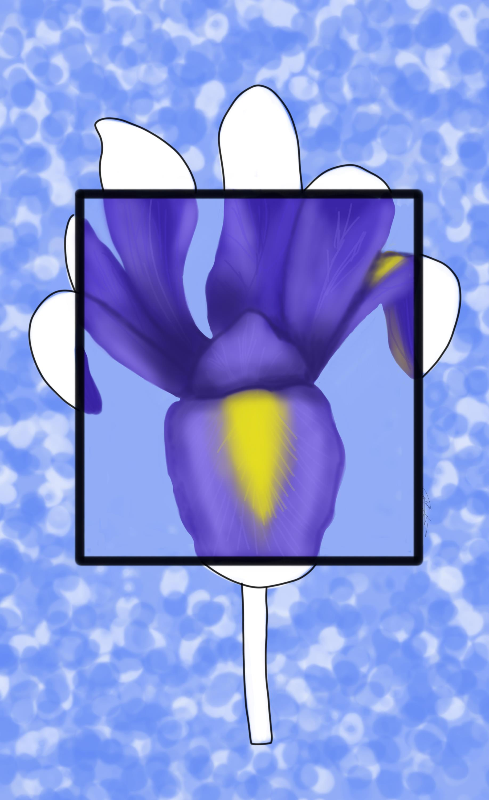
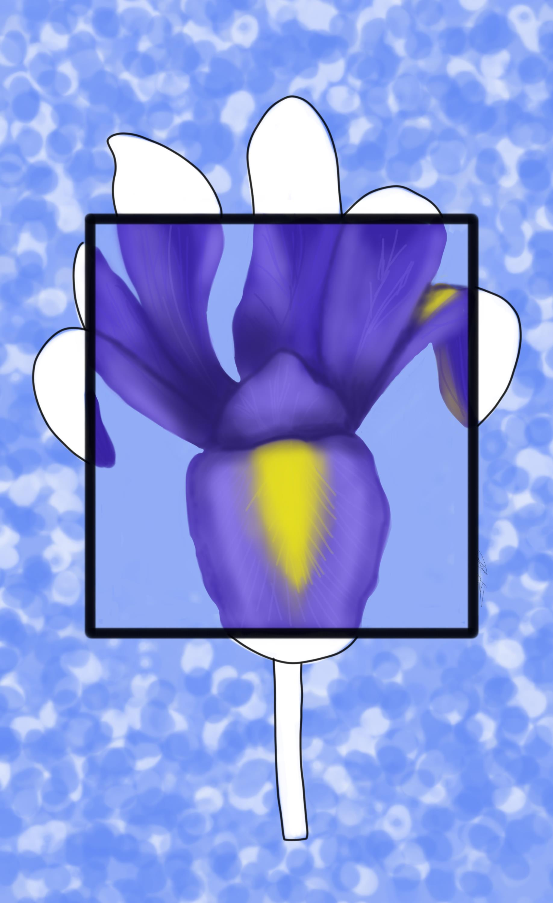

How it started
The Nature&Shapes series was created after a friend got a tattoo of a rose that was done in pointilism inside a triagnle and outlined outside of it and Sydney Kit was interested in how it would look with color.
The series started with traditional paintings but was moved to digital paintings after the original four.


 



How it's made
Want your own?
Just send me your favorite color, shape, and plant! It's free.